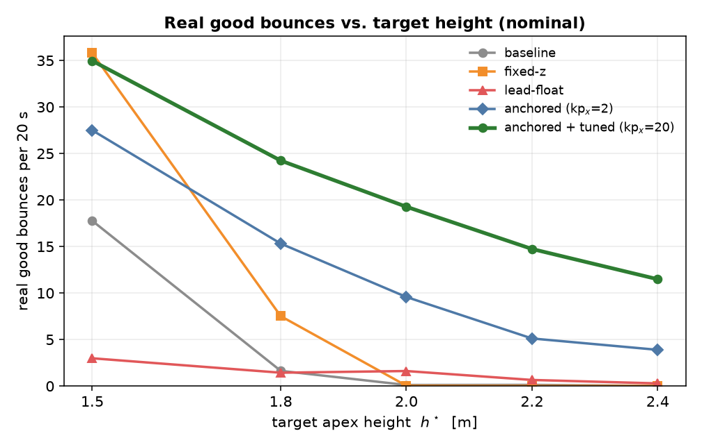
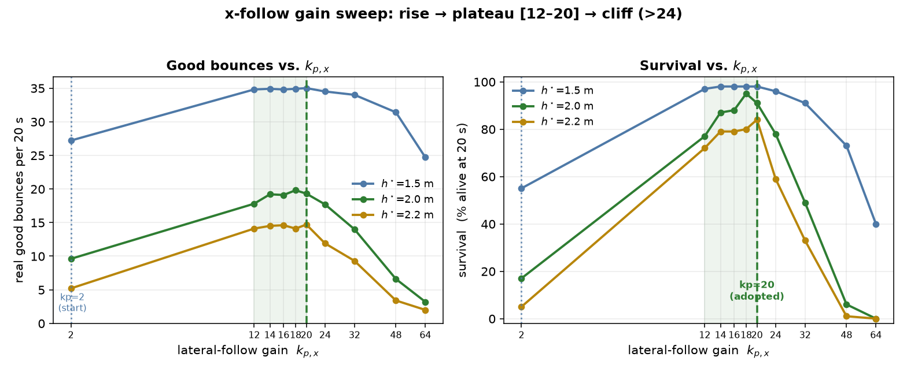
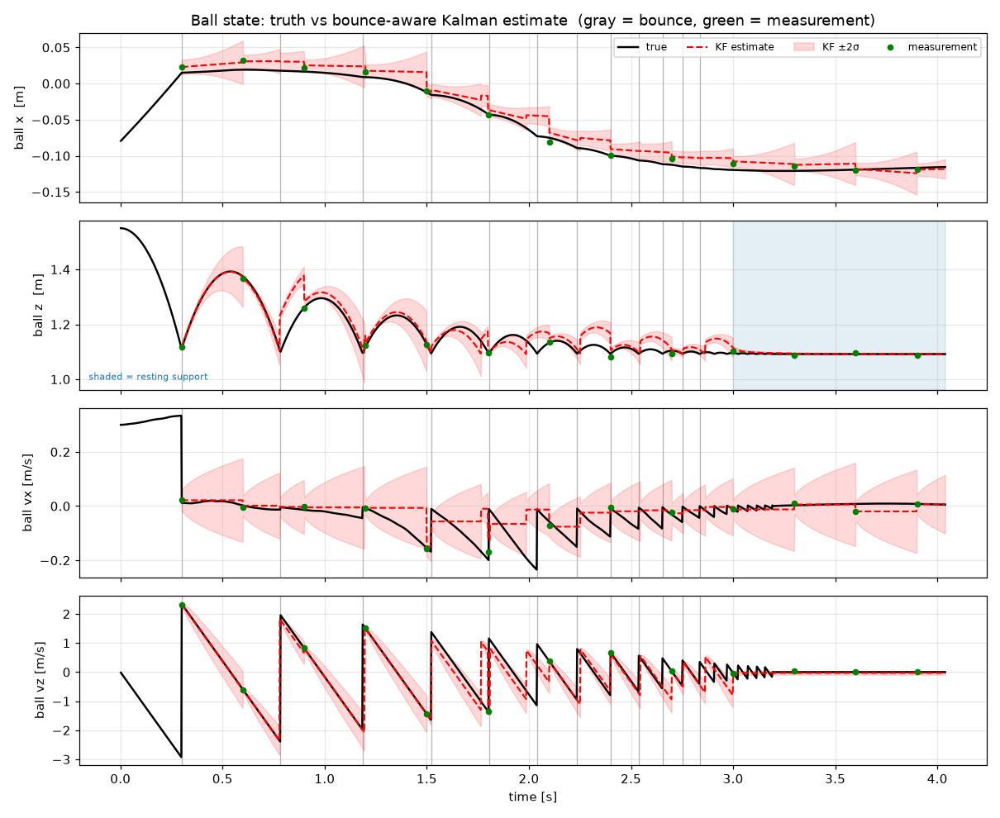
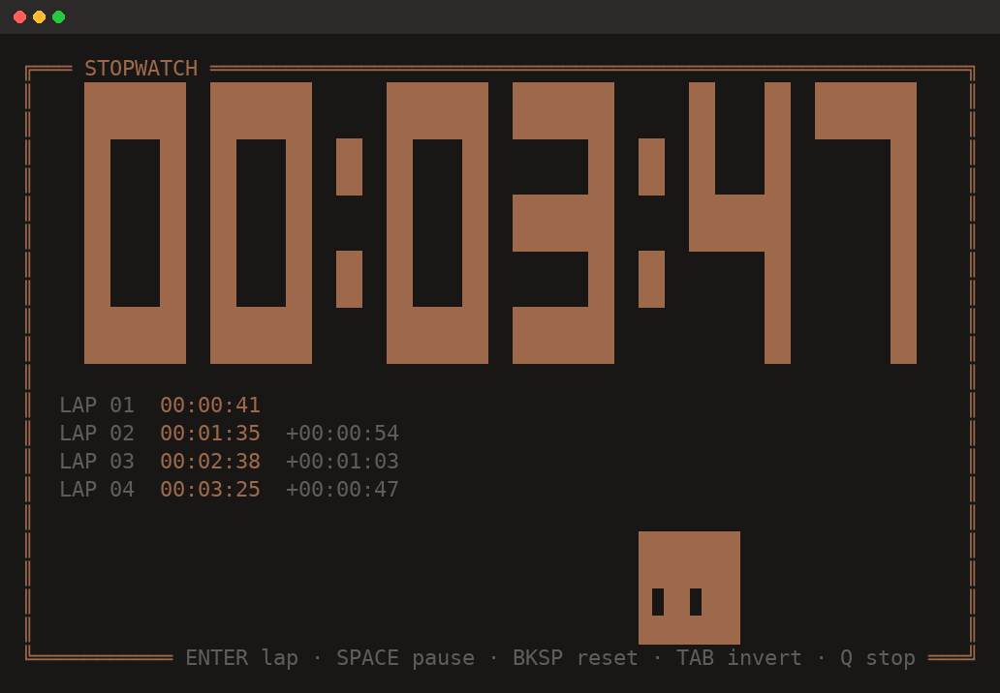
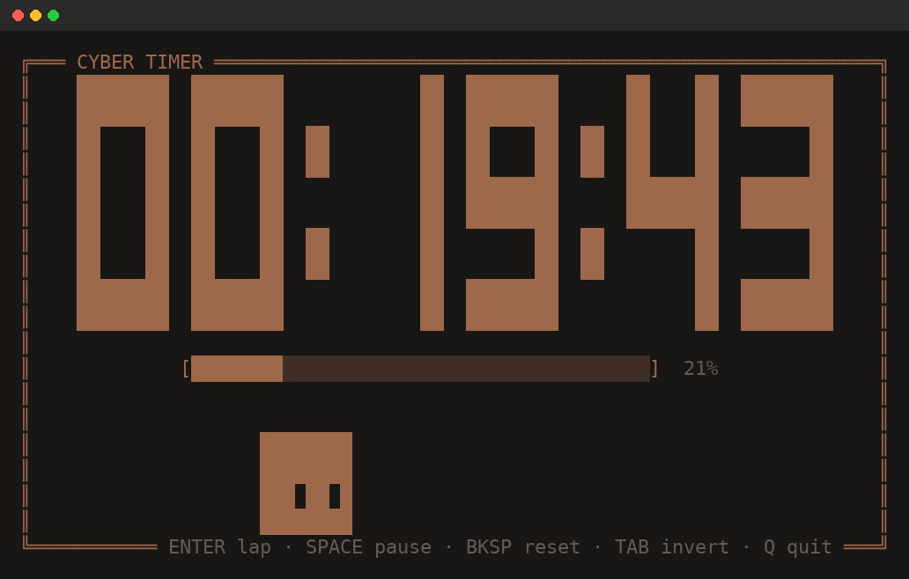
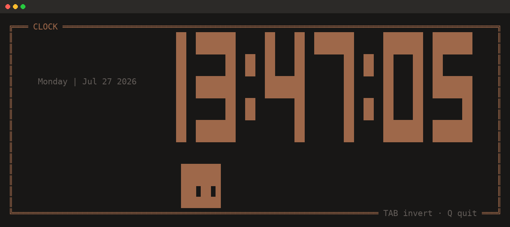

Reflections on the practical difficulties of teacher-student distillation for manipulation policies — what worked, what didn't, and what I'd do differently.
An underactuated planar quadrotor with a racket, keeping a rally going under wind while it only sees the ball every 0.30 s. Five controllers, and why survival is not competence.
A full screen countdown, stopwatch, and clock drawn in a seven segment font, and how you fake a hover event in a terminal that has none.
Spending six months making a large Vision-Language-Action model smaller taught me a surprising amount — mostly about how fragile these systems are when you start pulling them apart.
The basic setup sounds clean: take a large VLA teacher, supervise a smaller student with a mix of behavioural cloning and feature-level distillation, and hope the student picks up the important stuff. In practice it's messier. Feature alignment between architectures of different sizes is not obvious — matching layers naively leads to the student memorising representations that are locally correct but globally inconsistent.
What helped most was a staged training curriculum: first warm up the student on pure behavioural cloning, then introduce distillation losses progressively. Jumping straight into joint training made the student collapse to imitating the teacher's activations without understanding the task.
LoRA for fine-tuning the student backbone was the right call — full fine-tuning diverged quickly on the small LIBERO datasets. The adapter ranks needed careful tuning per module; attention layers wanted lower rank than feed-forward layers.
Long-horizon tasks exposed the main remaining gap. The student performs well on short, atomic operations but accumulates errors over sequences. This is the classic compounding error problem under behavioural cloning, and distillation doesn't fix it — it just inherits the teacher's same failure mode at lower cost.
Start with a much simpler student architecture and only scale up if needed. The pressure to match the teacher's design biased me toward an unnecessarily similar structure. Also: instrument everything from day one. Loss curves lie; per-task success rates tell the real story.
A planar (2D) underactuated quadrotor carries a racket and has to bounce a ball so that every apex lands on a commanded height, then keep the rally going indefinitely. The catch is that it fights wind, and it only sees the ball every 0.30 s through noisy measurements, so most of the work happens between observations.
The stack is a bounce aware Kalman filter that propagates the ball through its own contact discontinuity, plus a controller that plans each strike against a fixed anchored plane rather than the racket's live rising plane. An earlier lead float version taught me the most. It survived beautifully by tapping the ball near its apex and almost never scored, which is why the grader also requires the ball to genuinely fall before an apex counts. Survival is not competence.
The final anchored controller with lateral follow tuning reaches 35.0 and 19.3 good bounces per 20 s at the two target heights, at 98% and 91% survival, up from 17.8 and 0.1 bounces at 9% and 0% survival for the naive proportional baseline, measured over 100 seeds per cell. The write up is the real deliverable, a single self contained HTML report with the maths, every plot, and video of each landmark controller inlined.
| controller | good bounces / 20 s (1.5 m) | (2.0 m) | survival (1.5 m / 2.0 m) |
|---|---|---|---|
| baseline | 17.8 | 0.1 | 9% / 0% |
| fixed z | 35.8 | 0.0 | 70% / 27% |
| lead float | 3.0 | 1.6 | 87% / 69% |
| anchored | 27.5 | 9.6 | 55% / 11% |
| anchored + tuned | 35.0 | 19.3 | 98% / 91% |



A full screen countdown timer, stopwatch, and clock for the terminal, rendered in a solid seven segment font with a warm ember palette. It takes durations in whatever form is natural (25, 90s, 1h30m, 10:00), records laps, and beeps and waits for a keypress at zero so a finished timer never vanishes unnoticed.
Most of the effort went into the layout behaving under every terminal shape. Digits never grow taller than their width allows, the date beside the clock takes only the space left spare so it never costs the display a size step, and everything is drawn on the alternate screen buffer so scrollback survives. The renderer is a pure function from state to string, which means the layout can be inspected and tested without a TTY.
There is also a slime that wanders along the floor of the box and glances up at the clock. Terminals have no hover event, so when you point at it, it startles and jumps, synthesised from SGR mouse motion reports hit tested against where it is standing. Install it with npm install -g github:808kalli/cli-timer.


